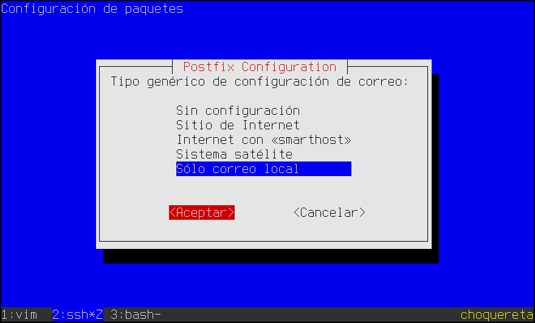

7.3.5.3.1. postfix (MTA)¶
Volvemos al MTA, pero sin el propósito de montar el servidor de correo de nuestro propio dominio; esta vez, profundizaremos en las funciones que puede cumplir en un sistema cliente (una máquina de escritorio, por ejemplo).
En un cliente un servidor de correo puede realizar las siguientes funciones:
Entrega local de correo para la notificación de sucesos a los usuarios. Muchas aplicaciones1 lo usan con este fin, por lo que sólo esto justifica tenerlo instalado2.
Intermediario entre el MRA y el MUA para los mensajes obtenidos de un servidor remoto y que deben depositarse en los buzones de usuario.
MSA externo para los clientes de correo (MUA) que carecen de esta capacidad.
7.3.5.3.1.1. Entrega local¶
Esta función exige que el servidor sea capaz de depositar en los buzones locales
de los usuarios aquellos mensajes que otros usuarios también locales les han
enviado. Cumplir con ello, exige solamente escoger un dominio (p.e.
example.net) y configurarlo adecuadamente en /etc/hosts tal como se
vio en los preliminares de la instalación del servicio, sin
necesidad de lograr tocar ninguna configuración DNS.
Hecho esto, podemos reconfigurar postfix escogiendo «Sólo correo local» en el menú:
Con esta configuración tendremos capacidad de enviar correos a cuentas de los dominios example.net y localhost, puesto que los destinatarios serán considerados locales. Podemos probar a enviar correo entre dos usuarios locales y ver si los reciben en sus buzones. Por ejemplo, de root a usuario:
# sendmail -t
From: root@localhost
To: usuario@localhost
Subject: Test SMTP
Prueba de entrega...
7.3.5.3.1.2. Intermediario entre MRA y MUA¶
Otra labor que puede desempeñar el servidor local de correo es el de entregar en los buzones locales los mensajes que el MRA (para nosotros, fetchmail como explicaremos más adelante) obtenga del servidor en el hayamos abierto nuestra cuenta de correo.
Para ello sólo requerimos un servidor que pueda hacer entrega local dejando los
mensajes en el buzón adecuado. Lo primero ya lo hemos visto arriba; lo segundo
puede ser más complicado si el usuario no se limita a tener un buzón mbox en
/var/mail/usuario. Sin embargo, ya lo hemos tratado en el epígrafe
dedicado a la entrega del correo con postfix, en que
resolvimos usar el MDA interno de postfix e indicar cómo un usuario
podía hacer uso de un MDA más potente: procmail, cuya configuración
trataremos un poco más adelante.
7.3.5.3.1.3. MSA¶
La tercera labor que puede hacer el servidor es la de MSA, es decir, la de mero cliente que entrega el correo saliente a un servidor SMTP para que éste se encargue de hacer llegar el mensaje al verdadero servidor de correo de destino.
Lo cierto es que esta labor ya la realizaba nuestro servidor cuando lo montamos para que gestionara realmente el correo de un dominio de internet. Sin embargo, hay una gran diferencia entre lo que montamos antes y lo que montamos ahora (un mero servidor de correo para entrega local): no gestionamos ningún dominio real que hayamos adquirido más allá del dominio local que hayamos podido inventarnos. Así que, si pretendiéramos entregar correo a servidores externos del mismo modo, estos rechazarían nuestras entregas, porque no nos considerarían servidores confiables. De hecho, hasta los años 2004 ó 2005, los servidores no eran tan exquisitos y aceptaban correo de cualquier servidor SMTP, por lo que los unices clientes solían practicar esta técnica de usar el servidor local para entregar directamente el correo en el servidor destinatario. Sin embargo, la eclosión de internet y la subsiguiente proliferación del spam llevó a los servidores a restringir la posibilidad.
Por ello, si quiere usarse el servidor local como MSA debe configurarse para que use la cuenta que hayamos abierto en un servidor externo de manera que éste acepte el mensaje (cosa que hará pues nos hemos validado en él), y sea éste el que envíe el mensaje al servidor de destino. O explicado con un ejemplo particular: si hemos abierto la cuenta pepe@gmail.com disponemos de un usuario (el propio pepe@gmail.com) y una contraseña para validación. Con ello configuramos el servidor para que, cuando el destino no sea local, use tal usuario y contraseña para validarse en el servidor de gmail y le entregue el mensaje. A partir de ese momente será gmail.com el encargado de enviar el mensaje a su destino final.
Esta posibilidad es la que ofrece el configurador «automágico» de postfix cuando dice Internet con smarthost, pero nosotros haremos la configuración a mano por dos motivos:
Porque hemos empezado a hacerla y ya eligimos otra opción (la de entrega local).
Porque lo habitual es que tengamos abiertas varias cuentas de correo y en consecuencia sean varias las credenciales y los servidores en los que tengamos que autenticarnos.
Comencemos, pues. Lo primero es rectificar algunas directivas de
/etc/postfix/main.cf generadas al elegir entrega local3:
# postconf -e 'inet_interfaces = all' 'default_transport = smtp' 'relay_transport = smtp'
Hecho lo cual, podremos rematar la configuración añadiendo las siguientes líneas:
# Servidor de envío dependiendo del emisor
relayhost = [smtp.gmail.com]:submission
smtp_sender_dependent_authentication = yes
sender_dependent_relayhost_maps = hash:/etc/postfix/sender_relay
# Autenticación
smtp_sasl_auth_enable = yes
smtp_sasl_mechanism_filter = plain, login
smtp_sasl_password_maps = hash:/etc/postfix/sasl_passwd
smtp_sasl_security_options = noanonymous
# Cifradi en el envío
smtp_use_tls = yes
smtp_sasl_tls_security_options = noanonymous
smtp_tls_note_starttls_offer = yes
smtp_tls_CAfile = /etc/ssl/certs/ca-certificates.crt
smtp_tls_policy_maps = hash:/etc/postfix/tls_policy
que hacen que la conexión a servidores SMTP sea autenticada y que tal
autenticación dependa del emisor, esto es, del campo From:. Se añade un
fichero para relacionar emisor con servidor (/etc/postfix/sender_relay)
y otro para relacionar cada emisor con sus credenciales de autenticación
(/etc/postfix/sasl_passwd). Por último, se define un servidor
predeterminado en caso de que el emisor no coincida con ninguno de los
expresados en los ficheros.
Advertencia
Se requiere tener instalado el paquete libsasl2-modules.
Los ficheros de mapeo se escribirán según las distintas cuentas con las que se escribirán correos:
# cat /etc/postfix/sasl_passwd
# Emisor # usuario:contraseña
pepe@gmail.com pepe@gmail.com:soypepe
manolo@example.net manolo:soymanolo
[smtp.gmail.com]:submission pepe@gmail.com:soypepe # Para el relayhost predeterminado
# cat /etc/postfix/sender_relay
# Emisor # [servidor]:puerto (puerto sólo si != 25)
pepe@gmail.com [smtp.gmail.com]:submission
manolo@example.net [smtp.example.net]
# cat /etc/postfix/tls_policy
[smtp.gmail.com]:submission encrypt
[smtp.example.net] encrypt
Nota
Obviamente, habrá que usar postmap para generar las bases de datos correspondientes a estos tres ficheros.
Recargada la configuración, podemos probar si funciona, enviando un mensaje con alguna de estas cuentas:
$ sendmail -f pepe@gmail.com -t
From: pepe@gmail.com
To: unacuentaexterna@servidor_externo.org
Subject: Probando postfix como MSA
Victoria!!!!
Advertencia
Dado que requerimos incluir en la configuración las contraseñas de
todas las cuentas, esta configuración sólo es adecuada si la máquina la
utiliza un único usuario. Además, tanto sasl_passwd como
sasl_passwd.db sólo deberían ser legibles por el usuario postfix:
# chown postfix /etc/postfix/sasl_passwd*
# chmod 600 /etc/postfix/sasl_passwd*
La configuración propuesta funciona sin problemas si todos los servidores aceptan negociación del cifrado (TLS). Sin embargo, si alguno o varios de los servidores requirieran el uso de SMTPs (lo cual suele ocurrir cuando esperan conexiones por el puerto 465), necesitaríamos incluir para ellos la directiva:
smtp_tls_wrappermode = yes
pero no para el resto. El problema es que no hay ningún fichero «maps» que nos
permita hacer tal distinción. La estrategia en este caso es crear un
transporte diferenciado para la entrega a servidores que requieren esa
directiva. Para ello podemos editar /etc/postfix/master.cf y bajo la
línea:
smtp unix - - y - - smtp
añadir otro transporte definido así (el nombre smtps es absolutamente arbitrario):
smtps unix - - y - - smtp
-o smtp_tls_wrappermode=yes
que añade la directiva requerida. Para rematarlo puede ahora crearse un mapeo
que dependiendo del emisor use este transporte. Por ejemplo, si los mensajes de
la cuenta soy.yo@juntadeandalucia.es deben enviarse a través de un servidor
que requiere este transporte, en /etc/postfix/main.cf habrá que indicar:
sender_dependent_default_transport_maps = hash:/etc/postfix/sender_transport
y crear /etc/postfix/sender_transport con este contenido:
soy.yo@juntadeandalucia.es smtps
No es necesario incluir más en el fichero, porque el resto de servidores usarán el transporte indicado en la configuración, que es smtp.
Nota
Obviamente, esta nueva cuenta, que usa un nuevo servidor
([mail.juntadeandalucia.es]:465), debe reflrjarse en sendas líneas en
los mapeos sasl_passwd, sender_relay y :file:`tls_policy.
Notas al pie
- 1
Tal es así, que hasta jessie, se instalaba un MTA (exim4) en la instalación mínima.
- 2
Por ejemplo, algo tan básico cómo advertir de que hay un disco corrupto en un RAID se hace a través del correo.
- 3
Si en la configuración del paquete hubiéramos elegido «Internet con smarthost», estas directivas tendrían el valor adecuado. Sin embargo, tal selección también añade:
inet_interfaces = alllo que permite conectar a nuestro servidor local desde otros ordenadores. Como estamos configurando un servidor para uso estrictamente local, lo más adecuado es el valor:
inet_interfaces = loopback-onlyque es precisamente el valor con el que nos deberíamos encontrar si escogimos entrega local.